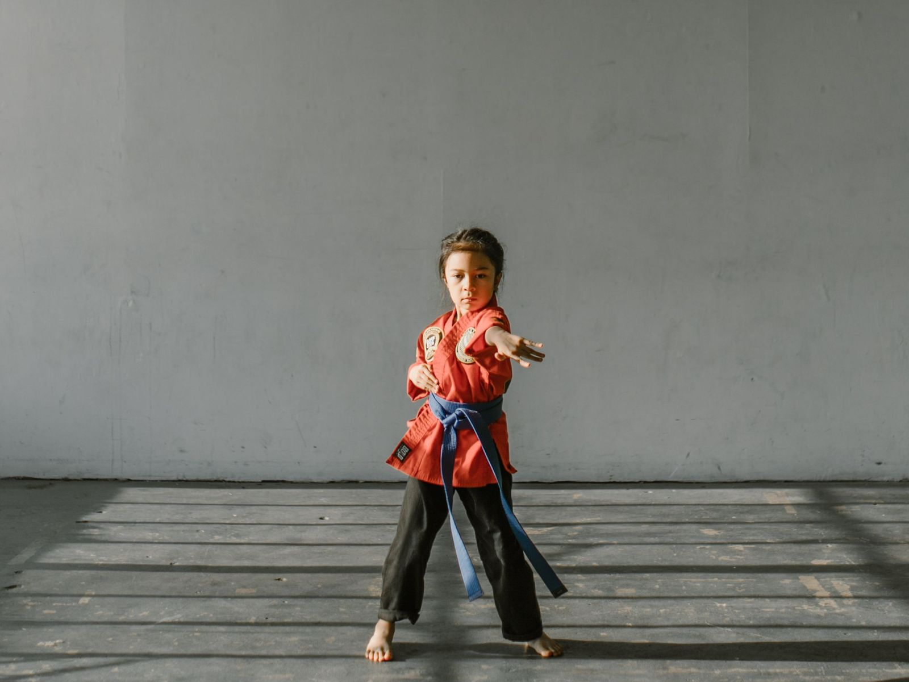

Écoles · Périscolaire · Centres de loisirs · Établissements spécialisés
Interventions en
Activité Physique Adaptée
Des ateliers sportifs et ludiques pour les enfants, construits pour développer l'autonomie, la gestion des émotions et la coordination. Une offre en cours de lancement, que nous construisons avec les structures qui la sollicitent.
Trois formats
De la découverte
au stage complet.
Chaque format se cale sur le rythme de votre structure. Le contenu, la durée et l'intensité s'ajustent au groupe.
一Initiation
Une séance de découverte, seule ou en courte série. Le format des mercredis hors vacances scolaires. On pose les repères, on teste, on voit ce que le groupe accroche.
二Cycle sportif
Une progression suivie sur plusieurs séances, autour d'une thématique. Chaque séance s'appuie sur la précédente : le groupe et l'intervenant se connaissent, on va plus loin.
三Stages
Le format des vacances scolaires : stage à la semaine, en matinée ou en après-midi. Un temps long qui permet d'aborder les trois thématiques et de construire une vraie dynamique de groupe.
Pour qui.
Les interventions s'adressent aux enfants de 3 à 12 ans, en groupe constitué. Elles se déroulent dans vos locaux ou sur votre espace de pratique.
- 一Écoles — temps d'activités périscolaires (TAP) et accueils périscolaires.
- 二Centres de loisirs (ALSH) — mercredis et vacances scolaires.
- 三IME et ITEP — groupes à effectif réduit, adaptation renforcée.
- 四Communes et villages autour de Montpellier — services enfance-jeunesse, sur les mercredis et les périodes de vacances.
Trois thématiques
Ce qu'on travaille.
Parcours d'agilité et motricité
Développement du schéma corporel, franchissement sécurisé, maîtrise des réceptions et équilibre.
Jeux d'opposition et maîtrise de soi
Canalisation de l'énergie, contrôle de soi, respect de l'autre et coopération.
Éveil corporel et posture
Mobilisation douce, travail de la respiration, relaxation dynamique et retour au calme.
Format d'une séance
Une heure,
trois temps.
Le format de référence dure une heure et se décline jusqu'à la demi-journée. La trame reste la même, les contenus s'étoffent.
Durée : de 1 h à une demi-journée, modulable selon vos besoins.
Cadre : parcours adapté et progressif, consignes claires de non-violence,
espace de pratique stabilisé.
Inclusion : les ateliers s'adaptent à tous les profils d'enfants, y compris
en inclusion.
- 10′Accueil et échauffement. Ritualisation, jeux de signaux, mobilisation articulaire douce.
- 35′Corps de séance. Agilité et franchissement, puis jeux d'opposition en sécurité.
- 15′Retour au calme. Respiration guidée au sol, étirements passifs, bilan oral et expression des ressentis.

La démarche
Aucun enfant
mis en échec.
Chaque programme part d'une évaluation initiale, pour proposer des situations ajustées aux capacités, aux besoins et aux objectifs de chacun. Les ateliers sont construits pour permettre une différenciation pédagogique immédiate : dans un même atelier, chaque enfant progresse à son niveau d'aisance.
Cette approche vient de la formation initiale de David — Licence STAPS mention Activité Physique Adaptée, complétée par un BPJEPS Loisirs Tous Publics.
Le parcours de DavidOffre en cours de lancement
Parlons de votre structure.
Les interventions se construisent au cas par cas, à partir de votre projet pédagogique, de vos créneaux et de vos effectifs. Écrivez-nous : nous revenons vers vous pour en discuter.